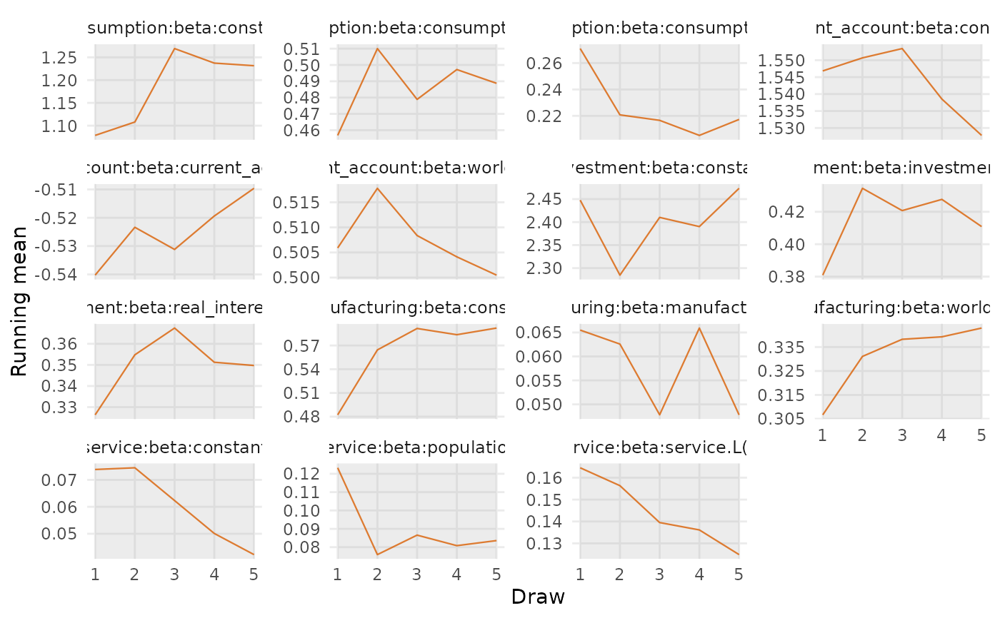

Visualize running means (cumulative averages) from running_mean() with a
light grey
band over the grace-window region.
Arguments
- x
A
koma_estimateobject.- ...
Additional arguments controlling the plot. See Details in
running_mean().
Details
Additional plot arguments in ...:
- scales
Facet scale option passed to
ggplot2::facet_wrap. Default is "free_y".- facet_ncol
Optional integer number of columns for facets.
- interactive
Logical. If TRUE and plotly is available, return an interactive plot via
plotly::ggplotly. Default is FALSE.
Examples
if (requireNamespace("ggplot2", quietly = TRUE)) {
data("simulated_sem")
set.seed(11)
fit <- estimate(
ts_data = simulated_sem$ts_data,
sys_eq = simulated_sem$sys_eq,
dates = simulated_sem$dates,
options = list(gibbs = list(ndraws = 10))
)
running_mean_plot(fit, params = "beta", max_draws = 100)
}
#>
#> ── Gibbs Sampler Settings ──────────────────────────────────────────────────────
#>
#> ── System Wide Settings ──
#> • Number of draws (`ndraws`): 10
#> • Burn-in ratio (`burnin_ratio`): 0.5
#> • Burn-in (`burnin`): 5
#> • Store frequency (`nstore`): 1
#> • Number of saved draws (`nsave`): 5
#> • Tau (`tau`): 1.1
#>
#>
#> ── Estimation ──────────────────────────────────────────────────────────────────
